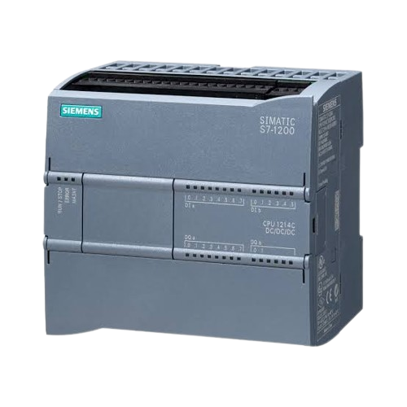
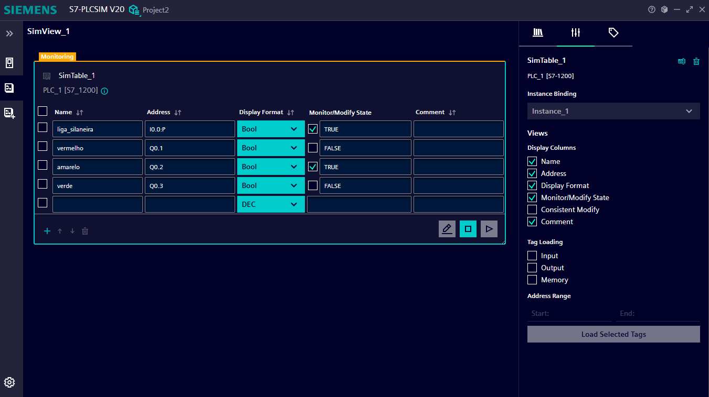
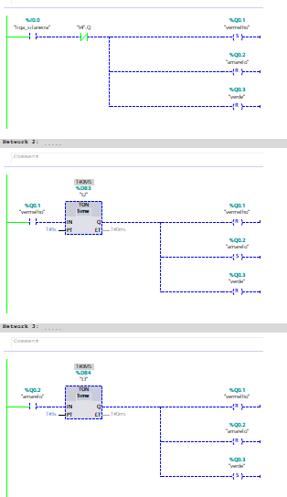
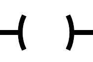
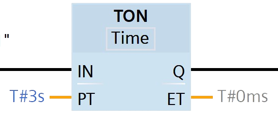

PLC é um controlador compacto e potente, ideal para automatizar máquinas e processos industriais de pequeno a médio porte. Ele combina alta velocidade, inteligência e facilidade de programação em um único equipamento.
muito eficiente por Otimizar a produção e o espaço no painel eletrico, possuindo uma entrada de ethernet e sendo desenvolvido pelo software TIA Portal.

Interface usada para simular o PLC, mais usada como forma didatica para estudos sobre o mesmo

Programa feito no PLC que simula uma sinaleira, usando bobinas de SET e RESET para ligar e desligar as cores, temporizadores TON para ligar as cores de forma organizada, um contato NO(normally-open/normal aberto) para dar partida no sistema e um contato NC(normally-clossed/normal fechado) como forma de loop no programa.
Contato Normal-Aberto(NA). quando acionado fecha a ligação e permite a passagem de energia.
Contato Normal-Fechado(NF). quando acionado abre a ligação e impede a passagem de energia.

Bobina. usada para acionar algum Bit como 1(HIGH) momentaneamente.
Bobina-Set. usada para acionar algum Bit, sendo desligado somente quando ouver uma ordem de Reset.
Bobina-Reset. usada para acionar desligar algum bit, sendo usado depois que o bit esta setado como set.

Temporizador TON(Timer-ON)
(outras variações como TOF e TP funcionam de forma parecida)
TOF:corta a passagem apos um tempo determinado
TP:Mantem ligado apenas pelo tempo determinado